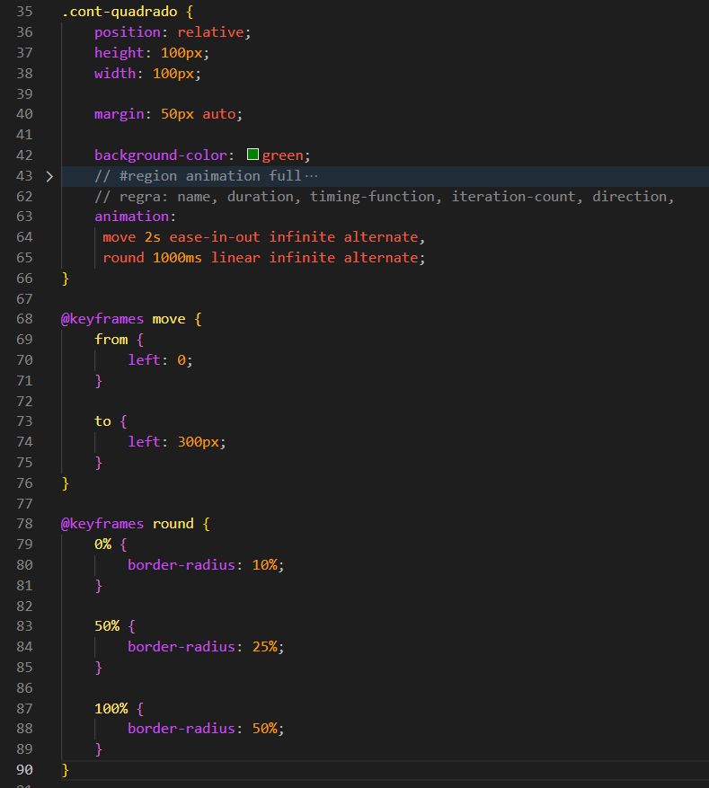

animation
Ela não é vinculada à transição de estado do elemento. Com isso, pode ser executada sem ações do usuário ou mudanças realizadas pelo JavaScript.
Para começar a usar animações, primeiro criamos um conjunto de quadros usando a regra @keyframes.
Caso a animação altere propriedades como left, right, top ou bottom, normalmente precisamos adicionar position: relative; ao elemento.
@keyframes move {
from {
left: 0;
}
to {
left: 300px;
}
}
Feito isso, ainda não ocorrerá nenhuma mudança, pois precisamos vincular a animação ao elemento.
Para isso utilizamos a propriedade animation-name e passamos o nome da animação criada, que neste caso é move.
Também precisamos definir uma duração usando a propriedade animation-duration.
animation-fill-mode
Define como o elemento ficará antes do início e após o término da animação.
O valor forwards faz com que o elemento permaneça no estado final da animação após ela terminar.
animation-iteration-count
Controla a quantidade de vezes que a animação será executada.
Se desejarmos que a animação aconteça continuamente, podemos utilizar o valor infinite.
animation-direction
Controla a direção da animação.
O valor reverse executa a animação ao contrário, enquanto alternate alterna entre o sentido normal e o inverso.
animation-play-state
Permite controlar se a animação está sendo executada ou pausada.
Podemos utilizá-la em conjunto com o pseudo-seletor :hover para pausar a animação quando o mouse estiver sobre o elemento.
animation-timing-function
Controla a velocidade da animação ao longo da sua execução, deixando-a mais suave ou mais acelerada em determinados momentos.
animation-delay
Define um atraso antes do início da animação.
animation
É a forma resumida de declarar várias propriedades de animação em uma única linha. é importante seguir a ordem sendo ela: name duration timing-function delay iteration-count direction
Exemplo:
animation: move 2s ease 1s infinite alternate forwards;
2 Animações
Também podemos adicionar mais de uma animação ao mesmo elemento.
Para isso, separamos cada animação utilizando vírgulas.
Exemplo: 2 animações em 1 elemento

Conteúdo da aula